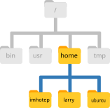

The Unix Shell: Navigating the File System
Questions
- How is a filesystem typically organised?
- How can I navigate a filesystem and work with files from the command line?
Learning Objectives
- Recognise the hierarchical structure of a filesystem.
- Navigate the filesystem and create or remove files and directories (
pwd,ls,cd,mkdir,rmdir,rm,cp,mv).
This section has an accompanying slide deck.
Working Directory
The part of the operating system responsible for managing files and directories is called the file system. It organizes our data into files, which hold information, and directories (also called “folders”), which hold files or other directories.
Several commands are frequently used to create, inspect, rename, and delete files and directories. To start exploring them, we’ll go to our open shell window.
First let’s find out where we are by running a command called pwd (which stands for “print working directory”). Directories are like places - at any time while we are using the shell we are in exactly one place, called our current working directory. Commands mostly read and write files in the current working directory, so knowing where you are before running a command is important. pwd shows you where you are:
$ pwd/home/ubuntu/Course_MaterialsHere, the computer’s response is /home/ubuntu/Course_Materials, which is the default starting directory on our training machines. Normally, the default directory would be /home/ubuntu, which is called the home directory. The name “ubuntu” is our username. If you were using your own computer, it would look different, for example /home/larry.
Home Directory Variation
The home directory path will look different on different operating systems. For a user named “larry”, on a Mac it would look like /Users/larry, and on Windows C:\Users\larry.
Slashes
Notice that there are two meanings for the / character. When it appears at the beginning of a file or directory name, it refers to the root directory. When it appears inside a name, it’s a separator.
Underneath /home, we find one directory for each user with an account on the machine, in the example shown in the figure below we have imhotep, larry, and “ubuntu” (you).

Example of users’ home directories
The user imhotep’s files are stored in /home/imhotep, user larry’s in /home/larry, and yours in /home/ubuntu.
Because you are the current user in our examples here, this is why we get /home/ubuntu as our home directory. Typically, when you open a new command prompt you will be in your home directory to start.
Listing Files
Now let’s learn the command that will let us see the contents of our own filesystem. We can see what’s in our current directory by running ls, which stands for “listing”:
$ ls01-unix 02-consensus 03-lineagesThe /home/ubuntu/Course_Materials/01-unix directory contains the data that we will use in this tutorial. We can look at its contents passing a directory name as an argument to ls:
$ ls /home/ubuntu/Course_Materials/01-unixartic_primers_pool1.bed artic_primers_pool2.bed
data metadata output.tsvChanging Directory
So far, we have been working from the /home/ubuntu/Course_Materials/. However, we can change our location to the 01-unix directory to do our work.
The command to change locations is cd (“change directory”) followed by a directory name to change our working directory.
$ cd /home/ubuntu/Course_Materials/01-unix/We can check with pwd that we are in the correct directory. We can also run ls again to see the files within our current directory.
What if we now wanted to go to the data directory? We could do:
$ cd /home/ubuntu/Course_Materials/01-unix/data/However, that’s a lot of typing! Instead, we can move to that directory by specifying its location relative to our current directory. So, if our current directory was /home/ubuntu/Course_Materials/01-unix/ we could just do:
$ cd dataIn conclusion, there are two ways to specify directory names:
- An absolute path includes the entire path (or location) from the root directory, which is indicated by a leading slash. The leading
/tells the computer to follow the path from the root of the file system, so it always refers to exactly one directory, no matter where we are when we run the command. - A relative path tries to find that location from where we are (our current directory), rather than from the root of the file system.
We now know how to go down the directory tree, but how do we go up? We might try the following:
$ cd 01-unix-bash: cd: 01-unix: No such file or directoryBut we get an error! Why is this? With our methods so far, cd can only see sub-directories inside your current directory. To move up one directory we need to use the special shortcut .. like this:
$ cd ../.. is a special directory name meaning “the directory containing this one”, or more succinctly, the parent of the current directory. Sure enough, if we run pwd after running cd .., we’re back in /home/ubuntu/Course_Materials/01-unix.
Another Shortcut
The shell interprets the character ~ (tilde) at the start of a path to mean “the current user’s home directory”. For example, for your home directory,/home/ubuntu, then ~/Course_Materials is equivalent to /home/ubuntu/Course_Materials. This only works if it is the first character in the path: here/there/~/elsewhere is not here/there/home/ubuntu/elsewhere.
Tab completion
Sometimes file and directory names get too long and it’s tedious to have to type the full name for example when moving with cd.
We can let the shell do most of the work > through what is called tab completion. Let’s say we are in the /home/ubuntu/Course_Materials/01-unix/ and we type:
$ ls metand then press the Tab ↹ key on the keyboard, the shell automatically completes the directory name:
$ ls metadata/If we press Tab ↹ again it does nothing, since there are 3 possibilities. In this case, pressing Tab twice brings up a list of all the files.
Using the filesystem diagram below, if pwd displays /Users/thing, what will ls ../backup display?
../backup: No such file or directory2012-12-01 2013-01-08 2013-01-27original pnas_final pnas_sub

Answer
- No: from the diagram, we can see that there is a directory
backupin/Users. - No: this is the content of
Users/thing/backup, but with..we asked for one level further up. - Yes:
../backup/refers to/Users/backup/.
Creating directories
We now know how to explore files and directories, but how do we create them in the first place?
First, we should see where we are and what we already have. Let’s go back to our 01-unix directory and use ls to see what it contains:
$ cd /home/ubuntu/Course_Materials/01-unix
$ lsartic_primers_pool1.bed artic_primers_pool2.bed data/ metadata/ output.tsvNow, let’s create a new directory called results using the command mkdir results:
$ mkdir resultsAs you might guess from its name, mkdir means “make directory”. Since results is a relative path (i.e., does not have a leading slash, like /what/ever/results), the new directory is created in the current working directory:
$ lsartic_primers_pool1.bed data/ output.tsv
artic_primers_pool2.bed metadata/ results/Two ways of doing the same thing
Using the shell to create a directory is no different than using a file explorer. If you open the current directory using your operating system’s graphical file explorer , the results directory will appear there too. While the shell and the file explorer are two different ways of interacting with the files, the files and directories themselves are the same.
Good names for files and directories
Complicated names of files and directories can make your life painful when working on the command line.
Click Here to see some useful tips for naming your files.
Don’t use spaces.
Spaces can make a name more meaningful, but since spaces are used to separate arguments on the command line it is better to avoid them in names of files and directories. You can use
-or_instead (e.g.consensus_sequences/rather thanconsensus sequences/).Don’t begin the name with
-(dash).Commands treat names starting with
-as options.Stick with letters, numbers,
.(period or ‘full stop’),-(dash) and_(underscore).Many other characters have special meanings on the command line. We will learn about some of these during this lesson. There are special characters that can cause your command to not work as expected and can even result in data loss.
"").
Since we’ve just created the results directory, there’s nothing in it yet:
$ ls resultsWhat’s In A Name?
You may have noticed that all of the files in our data directory are named “something dot something”. For example output.tsv, which indicates this is a “tab-delimited values” file.
The second part of such a name is called the filename extension, and indicates what type of data the file holds. Here are some common examples:
.txtsignals a plain text file..csvis a text file with tabular data where each column is separated by a comma..tsvis like a CSV but values are separated by a tab..logis a text file containing messages produced by a software while it runs..pdfindicates a PDF document..pngis a PNG image.
This is just a convention: we can call a file mydocument or almost anything else we want. However, most people use two-part names most of the time to help them (and their programs) tell different kinds of files apart.
This is just a convention, albeit an important one. Files contain bytes: it’s up to us and our programs to interpret those bytes according to the rules for plain text files, PDF documents, configuration files, images, and so on.
Naming a PNG image of a whale as whale.mp3 doesn’t somehow magically turn it into a recording of whalesong, though it might cause the operating system to try to open it with a music player when someone double-clicks it.
Moving & Renaming Files
In our 01-unix directory we have a file output.tsv, which contains the results of an analysis of SARS-CoV-2 variants for different samples. Let’s move this file to the results directory we created earlier, using the command mv, which is short for “move”:
$ mv output.tsv results/The first argument tells mv what we’re “moving”, while the second is where it’s to go. In this case, we’re moving output.tsv to results/. We can check the file has moved there:
$ ls resultsoutput.tsvThis isn’t a particularly informative name for our file, so let’s change it! Interestingly, we also use the mv command to change a file’s name. Here’s how we would do it:
$ mv results/output.tsv results/variants.tsvIn this case, we are “moving” the file to the same place but with a different name. One has to be careful when specifying the target file name, since mv will silently overwrite any existing file with the same name, which could lead to data loss.
The command mv also works with directories, and you can use it to move/rename an entire directory just as you use it to move an individual file.
Copying Files and Directories
The cp command works very much like mv, except it copies a file instead of moving it. For example:
$ cp data/envelope_protein.fa protein_copy.fa
$ lsartic_primers_pool1.bed data protein_copy.fa
artic_primers_pool2.bed metadata resultsMake a copy of the results directory named backup. When copying an entire directory, you will need to use the option -r with the cp command (-r means “recursive”).
Answer
If we run the command without the -r option, this is what happens:
$ cp results backupcp: -r not specified; omitting directory 'results'This message is already indicating what the problem is. By default, directories (and their contents) are not copied unless we specify the option -r.
This would work:
$ cp -r results backupRunning ls we can see a new folder called backup:
$ lsartic_primers_pool1.bed artic_primers_pool2.bed
backup data metadata resultsRemoving Files and Directories
Let’s tidy up our 01-unix directory by removing the protein_copy.fa file we created earlier. The Unix command we’ll use for this is rm (short for ‘remove’):
$ rm protein_copy.faWe can confirm the file has gone using ls.
Deleting Is Forever
The Unix shell doesn’t have a trash bin that we can recover deleted files from (though most graphical interfaces to Unix do).
Instead, when we delete files, they are unlinked from the file system so that their storage space on disk can be recycled. Tools for finding and recovering deleted files do exist, but there’s no guarantee they’ll work in any particular situation, since the computer may recycle the file’s disk space right away.
If we try to remove the backup directory we created in the exercise:
$ rm backuprm: cannot remove `backup': Is a directoryThis happens because rm by default only works on files, not directories.
rm can remove a directory and all its contents if we use the recursive option -r, and it will do so without any confirmation prompts:
$ rm -r backupGiven that there is no way to retrieve files deleted using the shell, rm -r should be used with great caution (you might consider adding the interactive option rm -r -i).
To remove empty directories, we can also use the rmdir command. This is a safer option than rm -r, because it will never delete the directory if it contains files, giving us a chance to check whether we really want to delete all its contents.
Operations with multiple files and directories
Oftentimes one needs to copy several files at once. This can be done by providing a list of individual filenames, or specifying a naming pattern using wildcards.
Copy with Multiple Filenames
Working from the 01-unix directory, run the following code. What does cp do when given several filenames and a directory name?
$ mkdir backup
$ cp metadata/run1_samples.csv metadata/run2_samples.csv backup/In the example below, what does cp do when given three or more file names?
$ cp metadata/run1_samples.csv metadata/run2_samples.csv metadata/run3_samples.csvAnswer
If given more than one file name followed by a directory name (i.e. the destination directory must be the last argument), cp copies the files to the named directory.
If given three file names, cp throws an error such as the one below, because it is expecting a directory name as the last argument.
cp: target 'run3_samples.csv' is not a directoryWildcards
Wildcards are special characters that can be used to access multiple files at once. The most commonly-used wildcard is *, which is used to match zero or more characters.
Let’s consider the data directory:
$ ls data/envelope_protein.fa sequencing_run1 spike_protein.fa
reference_genome.fa sequencing_run2
In this case, *.fa would match every file that ends with that word.
$ ls data/*.fadata/envelope_protein.fa data/reference_genome.fa data/spike_protein.faUse the * wildcard together with the copy command to copy all the protein files in the data folder to the backup folder that we created earlier.
Hint
Remember the “copy” command iscp.
Answer
First, make sure you are in the correct directory: cd ~/Course_Materials/01-unix.
Now, we can use the cp command together with the * wildcard:
$ cp data/*protein.fa backup/We can check the files are all there with ls backup/*protein.fa.
Summary
Key Points
- The file system is organised in a hierarchical way.
- Every user has a home directory, which on Linux is typically
/home/username/. - Locations in the filesystem are represented by a path:
- The
/used at the start of a path means the “root” directory (the start of the filesystem). /used in the middle of the path separates different directories.
- The
- Some of the commands used to navigate the filesystem are:
pwdto print the working directory (or the current directory)lsto list files and directoriescdto change directory
- Directories can be created with the
mkdircommand. - Files can be moved and/or renamed using the
mvcommand. - Files can be copied with the
cpcommand. To copy an entire directory (and its contents) we need to usecp -r(the-roption will copy files recursively). - Files can be removed with the
rmcommand. To remove an entire directory (and its contents) we need to userm -r(the-roption will remove files recursively).- Deleting files from the command line is permanent.
- We can operate on multiple files using the
*wildcard, which matches “zero or more characters”. For examplels *.txtwould list all files that have a.txtfile extension.